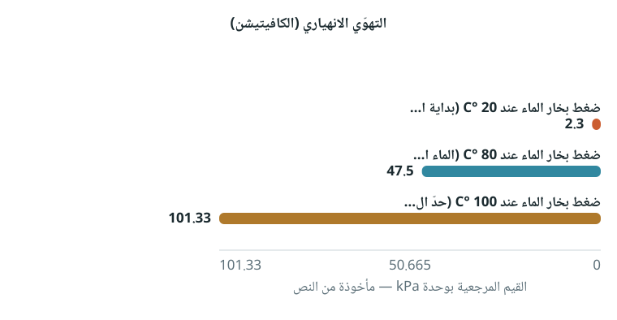

التهوّي الانهياري (الكافيتيشن)
Cavitation
تكوّن فقاعات بخار داخل السائل حين يهبط ضغطه الموضعي إلى ضغط بخاره عند درجة الحرارة السارية، ثم انهيارها العنيف عند عودة الضغط للارتفاع، فتُطلق نبضات ضغط تُفتّت سطح المعدن وتُسقط أداء المضخة.
يبدأ التهوّي الانهياري عند أضيق نقطة في مسار السائل: عين الرفّاص (impeller eye)، أو عنق صمام، أو مدخل ريشة، حيث تتحوّل طاقة الضغط إلى طاقة حركة فيهبط الضغط الساكن. فإذا نزل تحت ضغط البخار للسائل عند درجة حرارته، تكوّنت نوى بخار ونمت. تحملها الحركة بعد ذلك إلى منطقة ضغط أعلى فتنهار في أجزاء من الثانية. والانهيار لا يجري هدوءًا: الفقاعة القريبة من سطح صلب تنكمش غير متماثلة، فينطلق منها ما يشبه نفاثة سائلة دقيقة تصطدم بالسطح، أو موجة ضغط مرتدّة تُركّز الطاقة في مساحة ضيقة. تكرار ذلك آلاف المرات في الثانية يُزيل حبيبات المعدن حتى يحفر نقرًا إسفنجية، ويُصدر ضجيجًا واهتزازًا، ويُسقط الرأس والكفاءة، وقد يفتّت الرفّاص. والعَرَض الأولي قد لا يكون أكثر من طقطقة مسموعة، ولأن الأثر تراكمي فقد تعمل المضخة شهرًا في تهوّي خفيف وتُخرَّب قبل أن يسجّل مستشعر خللًا واضحًا. لذا فالعلاج دائمًا في جانب السحب: زيادة الضغط المتاح أو تبريد السائل أو توسيع الأنبوب وتقصيره، لا خنق السحب، لأن الخنق يزيد الهبوط ويُسرّع العطب.
كيف تعمل الظاهرة؟
الانهيار يحدث لأن بخار الفقاعة لا يبقى حين يتجاوز ضغط المحيط ضغط بخاره؛ فينكمش الجدار بسرعة متزايدة، وينتج عن الانكماش تركيزٌ للطاقة في مساحة دقيقة. وحين تكون الفقاعة قريبة من سطح صلب يصبح الانهيار غير متماثل: الجانب البعيد عن السطح ينهار أولًا فتنطلق نفاثة حسّاسة تجاه السطح، وهذا هو العامل الميكانيكي الأساسي للتآكل. ويتضاعف الأثر حين تصطف الفقاعات في سحابة تنهار ككتلة واحدة فترتفع قمم الضغط الموضعي ارتفاعًا حادًّا، حتى إن الجزء نفسه قد ينهار ثم يعود وينمو في الدورة التالية.
العلاقة بالأرقام
ضغط البخار هو المقياس الأول للخطر: 2.3 kPa عند 20 °C، و47.5 kPa عند 80 °C، و101.33 kPa عند 100 °C. أي أن الماء الساخن يقترب من حدّ الفقاعات بضغط ساكن أعلى بكثير، ولهذا تظهر المشكلة في مضخات تغذية المكثّفات ومياه التبريد الساخنة أكثر مما تظهر في الماء البارد. وعمليًّا يُحكم على القرب من التهوّي بمقارنة NPSHa بـ NPSHr، مع العلم أن NPSHr المنشور عند المصنّع قائم على NPSH3 أي عند انخفاض رأس مقداره 3%، فهو نقطة بداية تلف لا نقطة سلامة.
مفاهيم متقاربة
التمييز الحاسم في التشخيص بين أربعة أشياء: التهوّي الانهياري (تكوّن بخار وانهيار)، والتهوئة (دخول هواء حرّ عبر تسريب في السحب)، والوميض (ظاهرة تصاعد بخار مستمر دون انهيار)، والتآكل الكيميائي (فقدان معدن بتفاعل لا بضغط). الاختلاف في الأثر: التهوّي يُنتج نقرًا إسفنجية داخل منطقة الضغط المنخفض، والتهوئة تُنتج انخفاضًا متذبذبًا في الأداء مع فقاعات مستمرة، والتآكل الكيميائي يتبع مناطق التمرير لا بقع الضغط.
حدود التطبيق
الحكم على التهوّي ليس قاطعًا من رقم واحد: عتبة NPSH3 اصطلاح اختباري على الماء البارد، والسلوك يتباين مع السوائل والمخلوطات والغاز المذاب، والهيدروكربونات مثلًا أقل حساسية من الماء في الظروف نفسها. كما أن تلفًا ماديًّا يمكن أن يحدث عند هامش أعلى من الصفر، وأن التهوّي قد يظهر عند التشغيل بعيدًا عن نقطة الكفاءة القصوى حتى لو كان التركيب سليمًا عند النقطة التصميمية.

| الكمية | القيمة | المصدر |
|---|---|---|
| ضغط بخار الماء عند 20 °C (بداية انخفاض هامش السحب في الماء البارد) | 2.3 kPa | [1] |
| ضغط بخار الماء عند 80 °C (الماء الساخن يحتاج ضغطًا ساكنًا أعلى بكثير) | 47.5 kPa | [1] |
| ضغط بخار الماء عند 100 °C (حدّ الغليان عند الضغط الجوي) | 101.33 kPa | [1] |
| انخفاض رأس المضخة المعتمد عالميًّا لتعريف NPSH3 (نقطة تُقاس عندها بداية انخفاض الرأس وبها يبدأ التهوّي) | 3 % | [2] |
المصادر
- 1 Cavitation — The Engineering ToolBox. www.engineeringtoolbox.com/cavitation-d_407.html · اطُّلع عليه 2026-11-28
- 2 NPSHa vs NPSHr: how to calculate NPSH and what margin to use — HydroPumps — Engineering Guide. hydropumps.com.br/en/guides/npsh · اطُّلع عليه 2026-11-28
استشهد بهذا المصطلح
الصيغتان مبنيتان من بيانات الصفحة نفسها: العنوان والتاريخ ورابط النسخة المنشورة.
التهوّي الانهياري (الكافيتيشن) — Cavitation. (2026). ديوان المعرفة — انفراد. https://infiradev.com/diwan/terms/term-cavitation.html
@misc{term-cavitation2026,
title = {التهوّي الانهياري (الكافيتيشن)},
titleaddon = {Cavitation},
howpublished = {{ديوان المعرفة — انفراد} — مرجع علمي عربي},
year = {2026},
url = {https://infiradev.com/diwan/terms/term-cavitation.html},
urldate = {2026-11-28},
note = {مراجعة علمية: Abdullah Al-Huwaidi}
}
راجعه: Abdullah Al-Huwaidi · 2026-11-28 · آخر تحديث 2026-11-28